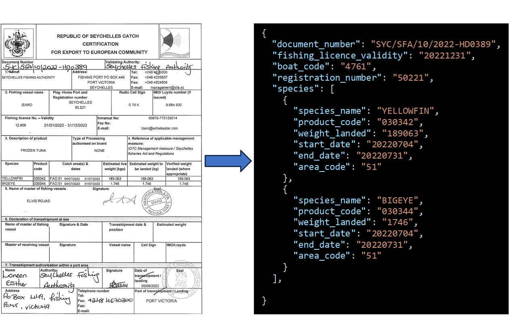
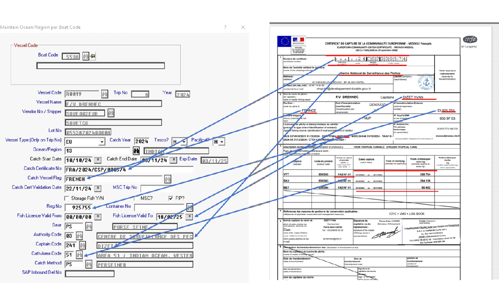
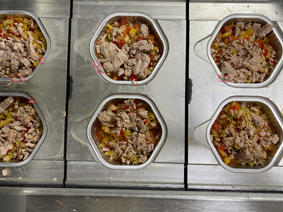
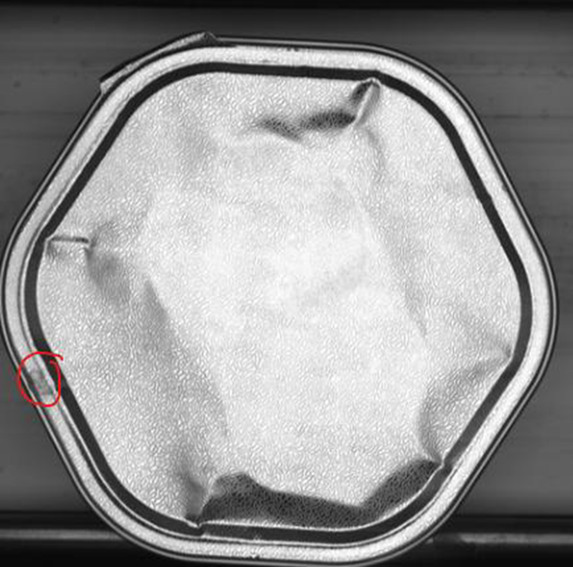

%%{init: {'theme':'default'}}%%
flowchart LR
A["📄 Input
Desenho Técnico"] --> B["🧠 VLM
Pré-treinado"]
B --> C["📐 JSON Schema
Constrained Output"]
C --> D["✅ Validação
Regras Engenharia"]
D --> E{"Válido?"}
E -->|Sim| F["💾 Base de Dados"]
E -->|Não| G["👤 Revisão Humana"]
G --> H["🔄 Feedback Loop"]
H --> B
GETGAIN Solutions
Portfólio de Soluções de Inteligência Artificial
Gustavo Reis, PhD, Senior AI
2026-04-14
GETGAIN Solutions, Lda.
Empresa de I&D sediada na Marinha Grande, especializada em Inteligência Artificial aplicada a processos industriais.
- Engenheiros Seniores de IA & Machine Learning
- Investigadores com PhD
- Parceria académica com IPLeiria (ESTG)
- Projetos financiados CENTRO2030 & SIFIDE
Domínios de Atuação
- 📄 Document AI / OCR Inteligente
- 👁️ Visão Computacional Industrial
- 📈 Forecasting & Manutenção Preditiva
- 🏗️ Automação BIM com IA
Áreas de Atuação
📄 Document AI
Extração inteligente de dados com VLMs (modelos de linguagem visual), processamento multi-país e multi-formato, validação automática contra bases de dados.
👁️ Visão Computacional
Controlo de qualidade em linha de produção com câmaras industriais, deteção de defeitos em tempo real, segmentação de zonas e classificação automatizada.
📈 Forecasting & Manutenção Preditiva
Previsão de procura com PatchTST/N-HiTS, classificação de condição de ativos industriais conforme ISO 10816-3, otimização de inventário.
🏗️ Automação BIM
Análise de desenhos de engenharia com VLMs locais, plugins Revit API (C#), automação de modelação estrutural, assistentes LLM integrados em ambiente CAD.
Projeto — Document AI (S3C/DocAI)
Setor: Comércio Internacional / Indústria Pesqueira — Projeto financiado SIFIDE (P1)
Pipeline de processamento automático de certificados de captura e documentos comerciais de múltiplos países, com extração de dados estruturados via VLMs.


Arquitetura e capacidades
- ✅ VLM Nanonets-OCR-s — prompts YAML externalizados e versionados por país/documento
- ✅ Suporte multi-país: Seychelles, Espanha, França — lógica de validação específica por país
- ✅ Multi-documento: Catch Certificates, Waybills, IUU Auth., Health Certificates
- ✅
ProcessorRegistry(factory pattern) + herança país × tipo de documento - ✅ PDFs multi-página (ex: certificados espanhóis com espécies na 2ª página)
- ✅ Validação cruzada com bases de dados e ground truth — métricas por campo
- ✅ Flask REST API para integração com ERP existentes
Stack: Python, Flask, Nanonets-OCR-s, HuggingFace, CUDA — deploy on-premise com quantização GGUF/Q4_K_M para GPUs 8GB
Resultados
| Métrica | Valor |
|---|---|
| Precisão de extração | ~98% por campo |
| Velocidade | 10x mais rápido que manual |
| Templates | 11 prompts (3 países × 4 tipos) |
Relevância para a Norton
A mesma arquitetura — VLMs + prompts YAML + JSON schemas + validação automática — é exatamente o que propomos para a análise de desenhos de engenharia. A tecnologia está testada e em produção.
Projeto — Smart Spillage Detection System (SSDS)
Setor: Indústria Alimentar / Conserveira — Projeto financiado SIFIDE (P2)
Sistema de inspeção visual automática a 100% das latas em linha de enchimento de conservas, para deteção de derrame e contaminação do rebordo em tempo real à velocidade da linha, adaptável a diferentes formatos de lata e tipos de produto.


Desafio e abordagem
A contaminação do rebordo resulta de excesso de enchimento, turbulência do líquido de cobertura ou protuberâncias de produto sólido. A recravagem com rebordo contaminado compromete a vedação e a esterilização — risco biológico regulado pelo Regulamento (CE) 852/2004 e normas HACCP.
A inspeção manual por amostragem não garante cobertura de 100% a velocidades de 200–400 latas/minuto.
Pipeline técnico
- ✅ Deteção de latas por YOLO — localização robusta de cada contentor independentemente do formato e posição
- ✅ Extração da rim zone com geometria adaptativa por formato de contentor (hexagonal/circular)
- ✅ Deteção de spillage por análise HSV com thresholds calibráveis por produto e espécie
- ✅ Bounding boxes com merge espacial e filtragem por dimensão/área
- ✅ Suporte para variabilidade visual: diferentes espécies (sardinha, atum, cavala), cores, texturas e viscosidades
- ✅ Pipeline de validação com imagens anotadas e métricas de precisão
- ✅ Síntese de defeitos (data augmentation) para mitigar desequilíbrio de classes (<2–5% latas contaminadas)
Stack: Python, YOLOv8 (Ultralytics), OpenCV, NumPy — deteção deep learning + análise de cor clássica
Resultados
| Métrica | Valor |
|---|---|
| Precisão de deteção | >95% |
| Tempo de inferência | <200ms por lata |
| Operação | 24/7 contínua |
| Cobertura | 100% das latas (vs. amostragem manual) |
Abordagem — híbrida e eficiente
YOLO para deteção robusta das latas + CV clássico para análise do rebordo — calibrável por tipo de produto. A mesma filosofia que propomos para a Norton: funciona com poucos exemplos anotados, constrangido por regras de domínio.
Relevância para a Norton
Demonstra a nossa capacidade de construir sistemas de inspeção visual em ambiente industrial real, com integração em linha de produção e operação 24/7. Para a Norton, a mesma abordagem YOLO + regras de domínio pode ser aplicada à deteção e classificação automática de elementos em desenhos técnicos.
Projeto — Smart Code Verification System (SCVS)
Setor: Indústria Alimentar / Conserveira — Projeto financiado SIFIDE (P3)
Sistema de verificação óptica de códigos de produção impressos por jacto de tinta (inkjet) em latas de conserva, com cruzamento automático contra a ordem de produção ativa no MES (Manufacturing Execution System).
Problema
O operador configura manualmente a impressora inkjet com o código de lote, data de validade e referência de produto. Erros de configuração resultam em lotes inteiros com marcação incorreta — recolhas de produto, não-conformidades regulatórias e custos elevados.
Pipeline técnico
- ✅ OCR especializado: TrOCR fine-tuned em fontes inkjet industriais (primário) + Qwen2.5-VL como secundário para casos difíceis
- ✅ Pré-processamento: iluminação coaxial, CLAHE, binarização de Sauvola, correção geométrica cilíndrica
- ✅ Motor de validação cruzada: marcação lida × EAN × ordem de produção MES (47 regras)
- ✅ Integração MES multi-protocolo (OPC-UA, REST, ficheiro partilhado)
- ✅ Corpus de treino: 3.000+ imagens inkjet de 4 modelos de impressora
Stack: Python, TrOCR, Qwen2.5-VL, OpenCV — integração com sistemas industriais existentes
Resultados SCVS
| Métrica | Valor |
|---|---|
| Taxa de leitura OCR | >99% |
| Deteção de mismatch | 100% dos erros de configuração |
| Falsos positivos | <1% |
| Integração | 4 modelos de impressora + MES |
Conformidade regulatória
Regulamento (UE) 1169/2011 (informação alimentar), GS1 Application Identifiers (AI 10/17), ISO 15415 (qualidade de código de barras). O sistema garante rastreabilidade de lote conforme Regulamento (CE) 178/2002.
Relevância para a Norton
Demonstra a nossa experiência em OCR industrial com validação cruzada contra bases de dados de referência — exatamente o que é necessário para ler e validar informação de desenhos técnicos contra tabelas de perfis e normas estruturais. A integração MES prova a capacidade de ligar o sistema de IA aos sistemas existentes do cliente.
Projeto — Previsão de Procura com Deep Learning
Setor: Indústria Alimentar / Distribuição — Clientes internacionais
Sistema de previsão de procura para centenas de SKUs. Implementado para dois clientes: fábrica de atum (procura diária) e distribuidor europeu de produtos do mar (dados semanais, 8 anos de histórico).
Pipeline completo
- ✅ PatchTST como modelo primário — patches semanais, quantile loss (P10/P50/P90), treino global multi-SKU
- ✅ N-HiTS como modelo challenger — decomposição multi-escala, interpretabilidade nativa
- ✅ ETS para ajuste de curto prazo (D+1 a D+14) — captura shifts recentes em ms/SKU
- ✅ Seleção champion/challenger por SKU e horizonte (MASE) com blending automático
- ✅ Covariáveis: promoções, lançamentos, feriados, stockouts, sazonalidade
- ✅ Features estáticas: família de produto, marca, ciclo de vida, tier de preço
- ✅ FastAPI serving com modelos em memória — inferência batch em tempo real
Stack: Python, PyTorch, PatchTST, N-HiTS, FastAPI
Resultados
| Métrica | Valor |
|---|---|
| SKUs modelados | 257 em paralelo |
| Registos processados | 181K+ |
| Redução de erro | ↓30% vs. baseline |
Modelo de serving
Treino offline (nightly) → modelos carregados em memória → utilizador clica → features calculadas → inferência batch → ETS adjustment → resposta JSON.
Suporte para modo rápido (só P50) e modo completo (P10/P50/P90 + atribuições).
Relevância para a Norton
Demonstra maturidade na construção de pipelines de IA end-to-end em produção — desde o treino de modelos até ao serving em tempo real com FastAPI. Para o projeto BIM, a mesma arquitetura de serving permite disponibilizar os modelos de análise de desenhos como serviço interno acessível a qualquer utilizador da equipa Norton.
Projeto — Manutenção Preditiva de Ativos Industriais
Setor: Indústria / Refinação — Projeto financiado CENTRO2030 (RHAQ)
Modelo preditivo de condição de ativos industriais (bombas, compressores, ventiladores) com classificação A/B/C/D conforme ISO 10816-3, em parceria com o ISQ — Instituto de Soldadura e Qualidade.
Pipeline de desenvolvimento
- ✅ Dataset: 1.766 ativos, 567.019 registos de vibração (mm/s) e aceleração (G-s), 6+ anos
- ✅ Engenharia de features: 247 features por ativo (224 estáticas + 20 temporais + 3 metadados)
- ✅ Deteção de outliers por votação maioritária: Isolation Forest + LOF + Elliptic Envelope — 45 outliers removidos
- ✅ PatchTST com 411.204 parâmetros — classificação supervisionada com balanceamento de classes
- ✅ Validação rigorosa: train/val/test split, early stopping, métricas por classe
Stack: Python, PyTorch, scikit-learn — Norma ISO 10816-3
Resultados
| Métrica | Valor |
|---|---|
| Accuracy (teste) | 60.5% (4 classes) |
| Accuracy (validação) | 71.6% |
| F1 classe D (paragem) | 0.68 |
Classes ISO 10816-3
| Classe | Significado |
|---|---|
| A | Boas condições |
| B | Pode funcionar longos períodos |
| C | Intervenção deve ser planeada |
| D | Parar imediatamente |
A classe D (paragem imediata) é a mais crítica — F1=0.68 demonstra capacidade real de deteção.
Relevância para a Norton
Prova a capacidade de trabalhar com dados industriais reais, escassos e ruidosos — exatamente o cenário BIM onde os dados de treino iniciais serão limitados. A abordagem de deteção de outliers, engenharia de features e validação rigorosa aplica-se diretamente à qualidade dos dados extraídos de desenhos técnicos.
Proposta — Automação BIM para a Norton
⭐ PROJETO PROPOSTO — Personalizado para a Norton Edifícios Industriais
Solução de I&D para automação de processos BIM com IA, focada em edifícios logísticos e industriais. Roadmap faseado com 13 funcionalidades ao longo de ~13 meses.
Fase 1 — Quick Wins (3 meses)
- ✅ Geração automática de vistas/desenhos
- ✅ Criação de eixos e níveis
- ✅ Classificação automática + MQT
- ✅ Inserção de pormenores construtivos
- ✅ Cálculo de volumes de caboucos
Impacto: ↓30-40% tempo em tarefas repetitivas
Fase 2 — Avançado (5 meses)
- ✅ Tipologia estrutural paramétrica
- ✅ Modelação de estruturas secundárias
- ✅ Quantidades e custos por alternativa
- ✅ Movimentação de terras (balanço 0)
- ✅ Zonas de drenagem e traçados
Impacto: ↓50-60% tempo na comparação de alternativas
Fase 3 — IA Integrada (4 meses)
- ✅ Assistente LLM integrado no Revit
- ✅ Pesquisa e colocação de famílias por NLP
- ✅ Planeamento 4D simplificado
Impacto: Aceleração na tomada de decisão e acessibilidade a utilizadores menos experientes
Tecnologias: Revit API (C#), VLMs locais (Qwen2.5-VL, Gemma 4), LLMs on-premise · 100% processamento local
Como funciona a IA sem muitos dados de aprendizagem?
“Sin muchos datos de aprendizaje la IA alucina” — Respondemos diretamente a esta preocupação.
🧠 VLMs Pré-treinados — Não partimos do zero
Utilizamos modelos com milhares de milhões de parâmetros (Qwen2.5-VL, Nanonets-OCR, Gemma 4) já treinados em milhões de documentos e imagens técnicas. O conhecimento base para interpretar desenhos de engenharia já existe no modelo — não precisamos de o treinar de raiz.
Como funciona a IA sem muitos dados de aprendizagem?
“Sin muchos datos de aprendizaje la IA alucina” — Respondemos diretamente a esta preocupação.
🎯 Few-Shot Prompting — 3 a 5 exemplos bastam
Com poucos exemplos anotados de desenhos reais da Norton, o modelo já extrai dados estruturados. No projeto DocAI, atingimos ~98% de precisão com apenas 3-5 exemplos representativos por tipo de documento.
Como funciona a IA sem muitos dados de aprendizagem?
“Sin muchos datos de aprendizaje la IA alucina” — Respondemos diretamente a esta preocupação.
📐 Schemas Rígidos — O modelo não pode inventar
O output é constrangido a JSON schemas com campos obrigatórios e tipos validados. O modelo preenche os campos ou é rejeitado — não há espaço para “alucinação”. Mesma abordagem dos prompts YAML externalizados no DocAI.
✅ Validação contra regras de engenharia
Cross-check automático com tabelas de perfis (HEB, HEA, IPE), normas dimensionais e regras de consistência geométrica. Se o modelo diz “HEB 300” mas as dimensões não correspondem à tabela, o sistema rejeita e sinaliza.
👤 Human-in-the-Loop — Validação integrada
Nas fases iniciais, cada output passa por validação humana no workflow. Cada correção alimenta melhoria contínua. No projeto ISQ, esta abordagem permitiu refinar 1.766 ativos até F1=0.68 na classe crítica.
🚀 Abordagem Incremental — Valor desde o dia 1
MVP focado num scope limitado (ex: apenas pilares HEB/HEA em edifícios logísticos). Expandimos progressivamente à medida que a base de conhecimento validado cresce. A Fase 1 entrega quick wins em 3 meses — sem risco.
Pipeline Anti-Alucinação — Fluxo Técnico
| Métrica | Valor |
|---|---|
| Dados para cloud | 0% |
Processamento 100% local
| Métrica | Valor |
|---|---|
| Exemplos iniciais | 3–5 |
Para iniciar extração com VLM
| Métrica | Valor |
|---|---|
| Outputs validados | 100% |
Regras de negócio e engenharia
| Métrica | Valor |
|---|---|
| Precisão DocAI | ~98% |
Com esta mesma abordagem
Este é exatamente o pipeline que propomos para a análise de desenhos da Norton.
Gemma 4 — Novo VLM Open-Source para o Projeto Norton
O Gemma 4 (Google DeepMind, Abril 2026) é o mais recente modelo open-source multimodal, lançado sob licença Apache 2.0 — sem restrições comerciais.
Porquê o Gemma 4 para a Norton?
- ✅ OCR e document parsing nativos — desempenho competitivo em DocVQA e ChartQA, ideal para interpretar plantas técnicas
- ✅ Resolução variável configurável — token budgets de 70 a 1120 por imagem; máximo detalhe para cotas e anotações, modo rápido para processamento em lote
- ✅ Function calling nativo com JSON estruturado — encaixa diretamente na arquitetura de schemas constrangidos do nosso pipeline, sem pós-processamento
- ✅ Corre on-premise numa GPU consumer — o modelo 26B MoE requer apenas 24GB VRAM (RTX 3090/4090), ativando apenas 3.8B parâmetros por token para latência mínima
- ✅ Reasoning integrado — modo thinking step-by-step para tarefas complexas de interpretação de desenhos
Especificações relevantes
| Característica | Valor |
|---|---|
| Licença | Apache 2.0 (sem restrições) |
| Contexto | 256K tokens |
| Visão | OCR, PDF parsing, deteção de objetos |
| JSON output | Nativo (function calling) |
| VRAM (26B MoE) | 24GB — GPU consumer |
| Parâmetros ativos | 3.8B por token (eficiente) |
Estratégia proposta
Avaliar o Gemma 4 26B MoE como alternativa/complemento ao Qwen2.5-VL no pipeline da Norton. A resolução configurável permite cortar custos de inferência em 4× em processamento batch, mantendo precisão máxima para OCR de desenhos individuais.
Stack Tecnológico
IA & Machine Learning
- ✅ PyTorch — treino e inferência
- ✅ PatchTST, N-HiTS — séries temporais
- ✅ YOLO — deteção de objetos
- ✅ VLMs — Qwen2.5-VL, Nanonets-OCR-s, Gemma 4
- ✅ scikit-learn — feature engineering
- ✅ LLMs fine-tuned por domínio
Desenvolvimento
- ✅ Python — ML, APIs, pipelines
- ✅ C# / .NET — Revit API, Blazor
- ✅ C++ — aplicações de performance
- ✅ Flask / FastAPI — REST APIs
- ✅ Docker — containerização
- ✅ OpenCV — visão computacional
Infraestrutura
- ✅ GPU On-Premise (CUDA 12.x)
- ✅ Quantização GGUF/Q4_K_M
- ✅ Deploy em máquinas 8GB VRAM
- ✅ CI/CD automatizado
- ✅ Monitorização & alertas de drift
- ✅ Deploy Edge / Cloud híbrido
Proposta de Valor para a Norton
✅ Experiência real com VLMs e documentos técnicos
Não é teoria — já temos em produção pipelines que extraem dados de documentos técnicos com ~98% de precisão usando exatamente os mesmos VLMs que propomos para os desenhos da Norton. A arquitetura está testada e validada.
✅ Revit API — já desenvolvemos plugins
Experiência concreta com a Revit API em C# — criação de elementos estruturais, automação de modelação. Não partimos do zero na integração com o ecossistema Autodesk.
✅ Processamento 100% local
Toda a computação é on-premise. Experiência a otimizar modelos para GPUs consumer (8GB VRAM) com quantização GGUF. Os desenhos e dados da Norton nunca saem do perímetro da empresa.
✅ Abordagem faseada — valor desde o mês 1
Roadmap de 13 funcionalidades em 3 fases. A Fase 1 entrega 5 quick wins em 3 meses com impacto mensurável (↓30-40% tarefas repetitivas). Sem big-bang, sem risco — valor incremental demonstrável.
Próximos Passos
Roadmap proposto
- Reunião de levantamento de requisitos com equipa GTEC
- Proposta técnica e comercial detalhada
- Fase 0 — Diagnóstico e framework (3 semanas)
- Fase 1 — Quick wins com resultados em 3 meses
Contacto
Gustavo Reis — Diretor de I&D
gustavo.reis@getgainsolutions.com
GETGAIN Solutions, Lda. — Marinha Grande, Portugal

GETGAIN Solutions, Lda. — Confidencial